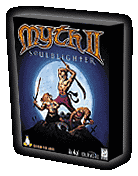

Sharpen your swords and fire up the cauldrons--Soulblighter is back! Bungie's thrilling strategy adventure, Myth II: Soulblighter, brings back the scourge of the West and challenges you with all-new scenarios and improved graphics and 3D rendering.
In command of a ragtag army of beserkers, dwarves, soldiers and sorcerers, you are the last hope (yet again) of saving the folk of Madrigal and the West from the evil might of Soulblighter and his minions. Test your fortitiude by challenging others on your network or online to a battle to the death, or cross swords and sages with Soulblighter himself. For fantasy gamers, this is far better than a slab of roast beast washed down with a tall ale...
Thanks to the efforts of Loki, this awesome adventure is now available for Linux 2.x and glibc2. Now you can match the power of your sorcery with the power of your favorite operating system. Get it now...before it's too late.
| Minimum system requirements | |
|---|---|
| Linux Kernel |
Linux kernel 2.0.x or 2.2.x and glibc-2.x |
| Processor | Pentium 133 MHz (200 MHz recommended) or PowerPC 601 120MHz |
| CD-ROM | 4-speed CD-ROM drive |
| RAM | 32 MB required; 80 MB swap |
| Sound | OSS compatible sound card |
| Hard disk | Minimum 100 MB free disk space |
| Video | XFree86 3.3.x ; 16-bit video card ; SVGA Monitor |
| Misc | Internet connection (for Internet play) ; Network card (for net play) |